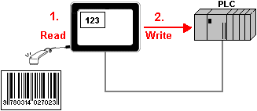
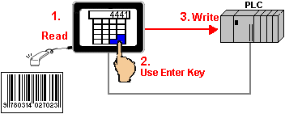
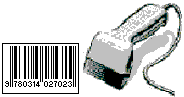
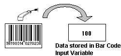
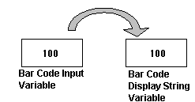
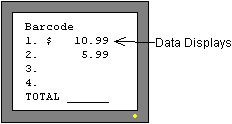
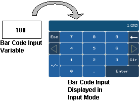
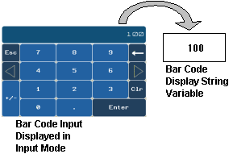

|
|
|
|
|
|
|
|
Bar codes can be input in one of two different modes: Direct Input or Use Enter Key
Direct Input : When bar code data is read, the bar code input data stores in the bar code string variable and the input data —depending on what the user specified—immediately displays in a data display part, or writes to a device address. See Section 24.1.5, Scanning Data with the Bar Code Scanner.

Use Enter Key : When bar code data is read, the bar code input data stores in the bar code string variable and displays in the Key Pad where the user can add/edit values to the input data using the keypad or keyboard. The user either accepts the data by pressing ENT, or cancels the data by pressing ESC. Once the data is accepted, the input data—depending on what the user specified— displays in a text object or data display part, or writes to a device address. See Section 24.1.5, Scanning Data with the Bar Code Scanner.

Display the Target's properties in the Property Inspector.
In the Barcode Input (Keypad) field, select Direct Input or Use Enter Key to set the bar code input mode.
Because bar codes are character codes (ASCII), you can only use String variables to read the data. See the illustrations below for an overview of the different ways you can input bar code data: Direct Input and Use Enter Key.
Scan a Bar Code.

Data will be stored in the Bar Code Input variable.

The Data is copied to the Bar Code Display variable.

The Bar Code Display variable value displays on a panel that uses Data Display.

Scan a Bar Code.
The Data will be stored in the Bar Code Input variable.
The Data is displayed in input mode where the user can add/edit values using the keypad/keyboard. The user either presses ENT to accept the value, or presses ESC to cancel the value.

If the user accepts the value, the Data is copied to the Bar Code Display variable.

The Bar Code Display variable value displays on a panel that uses Data Display.